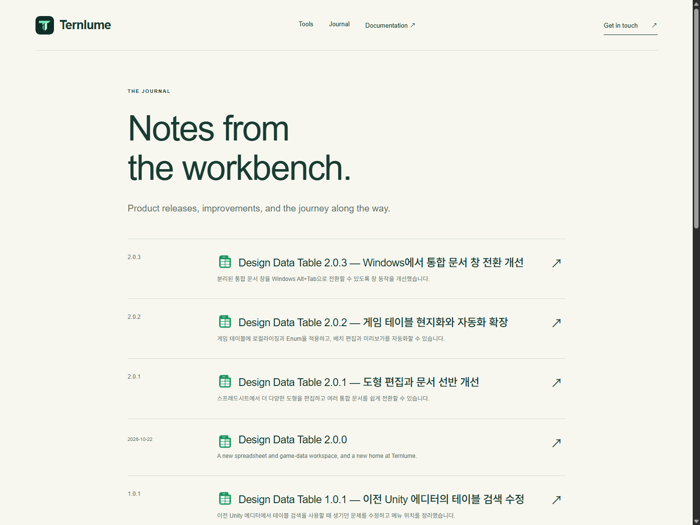
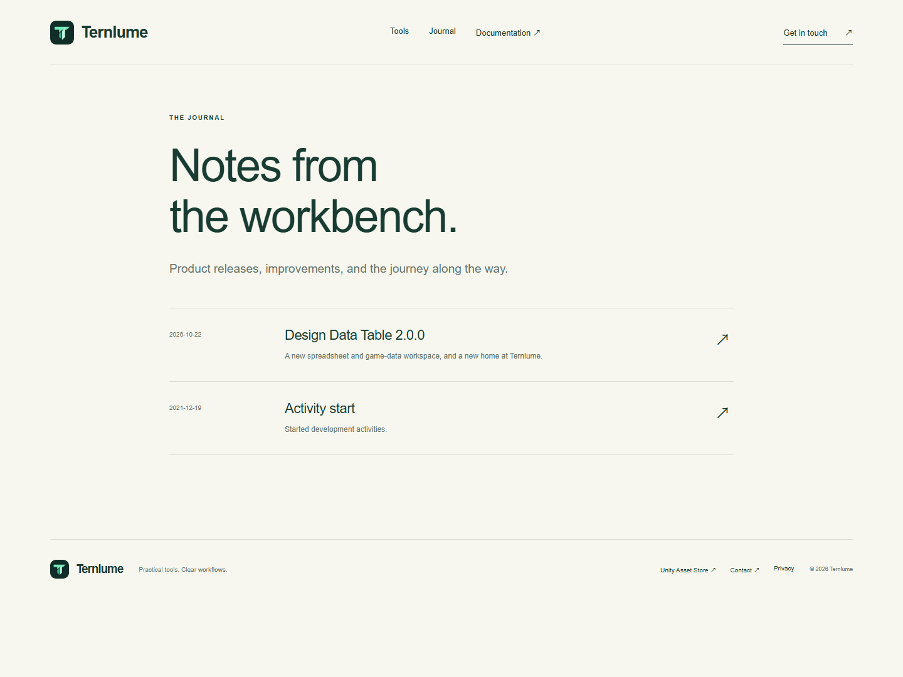
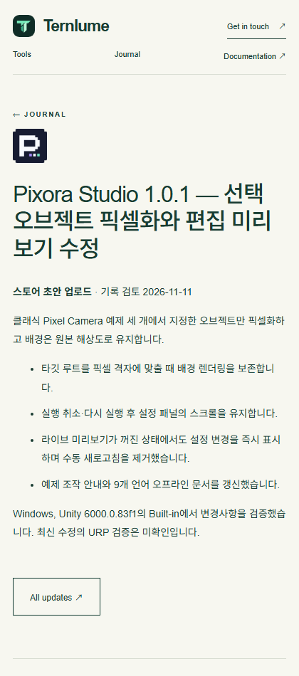

Tracefolio REPORTS & ISSUES
Tracefolio REPORTS & ISSUESTernlume 사이트 병합과 제품 버전별 Journal 공개
완료기존 Pages 주소를 유지하고 통합 저장소에서 5개 제품의 13개 버전 글을 배포했습니다.
작업 결과
기존 Ternlume 사이트 원본을 Unity 제품 저장소의 Website/Ternlume에 병합했습니다. 5개 제품의 버전별 글 13건이 기존 공개 주소에서 열립니다. Ternlume Journal
변경 내용
적용 내용

제품 ID와 정확한 버전을 글의 키로 사용합니다. 같은 버전 재업로드는 기존 글을 갱신합니다. Design Data Table 2.0.0은 기존 날짜 기반 URL을 재사용합니다. 초안·심사 제출·공개 기록은 본문에 각 상태로 표시합니다.
flowchart TD
A["제품 ID와 버전"] --> B{"같은 버전 글이 있는가"}
B -->|있음| C["같은 URL의 원고와 스토어 상태 갱신"]
B -->|없음| D["버전 글 생성"]
C --> E["사이트 빌드와 링크 검증"]
D --> E
E --> F["기존 Pages 프로젝트에 배포"]
F --> G["공개 글과 썸네일 확인"]
버전 글 키 검증과 표시
Website/Ternlume/scripts/releases.mjs가 중복 키와 미등록 상태를 거부하고, 기존 URL과 신규 버전 URL을 결정합니다. 두 함수의 전체 구현입니다.
import { readFile } from 'node:fs/promises';
const versionPattern = /^\d+\.\d+\.\d+(?:-[0-9A-Za-z.-]+)?$/;
const statusLabels = {
draft: '스토어 초안 업로드',
submitted: '스토어 심사 제출 기록',
approved: '스토어 승인 확인',
published: '스토어 공개 확인',
'historical-release': '과거 출시 기록',
unverified: '스토어 상태 미확인',
};
const thumbnails = {
'design-data-table': '/assets/design-data-table-logo.png',
'entity-forge': '/assets/entity-forge-logo.png',
'pixel-camera': '/assets/pixel-camera-logo.png',
pixora: '/assets/pixora-logo.png',
'pixora-studio': '/assets/pixora-studio-logo.png',
};
const existingPathByKey = {
'design-data-table-2.0.0': '/2026/10/22/design-data-table-2-0-0/',
};
export async function loadReleases() {
const input = new URL('../../../Docs/Store/TernlumeReleasePosts.ko.json', import.meta.url);
const { posts, language, storeStatusAsOf } = JSON.parse(await readFile(input, 'utf8'));
const keys = new Set();
return posts.map(release => {
const key = `${release.productId}-${release.version}`;
if (!Object.hasOwn(thumbnails, release.productId) || !versionPattern.test(release.version) ||
key !== release.slug || keys.has(key) || !Object.hasOwn(statusLabels, release.storeStatus)) {
throw new Error(`Invalid or duplicate Ternlume release: ${key}`);
}
keys.add(key);
return {
...release,
language,
storeStatusAsOf,
statusLabel: statusLabels[release.storeStatus],
thumbnail: thumbnails[release.productId],
path: existingPathByKey[key] ?? `/updates/${key}/`,
};
});
}
export function renderRelease(release, escape) {
const changes = release.changes.map(change => `<li>${escape(change)}</li>`).join('');
const date = release.storePublishedAt?.slice(0, 10);
return `<section class="prose release-details" lang="${escape(release.language)}">
<p><strong>${escape(release.statusLabel)}</strong> · 기록 검토 ${escape(release.storeStatusAsOf)}${date ? ` · 스토어 공개일 ${escape(date)}` : ''}</p>
<p>${escape(release.intro)}</p>
${changes ? `<ul>${changes}</ul>` : ''}
${release.compatibility ? `<p>${escape(release.compatibility)}</p>` : ''}
</section>`;
}
대화 기록
- 사용자 · 기존 Ternlume 사이트와 TurnRoom을 합쳐 버전별 글을 게시해 달라고 요청했습니다.
- 사용자 · “기존 주소 유지, 연결 저장소 변경”으로 공개 주소 유지 범위를 확정했습니다.
- Codex · 기존 프로젝트가 Direct Upload임을 확인하고, 병합 커밋을 새 배포의 소스로 지정했습니다.
검증
로컬 빌드에서 HTML 39페이지와 로컬 참조 901개를 검증했습니다. 공개 글 13개와 썸네일 5종, 홈, 기존 글, 문서를 최종 빌드와 바이트 단위로 대조했습니다. 데스크톱 1440px Journal과 모바일 420px 개별 글의 실제 브라우저 화면을 확인했습니다.


남은 사항
Cloudflare의 기존 프로젝트는 Direct Upload 방식입니다. 주소를 유지하며 통합 저장소에서 직접 배포했고, 푸시 연동 자동 배포는 구성되지 않았습니다. 사용자가 예정한 기존 저장소 삭제 및 통합 저장소 이름 변경은 별도입니다. 원본 Git 이력은 검증한 로컬 번들에 백업했습니다.
작업 시간
- 제안 시간: 원본 탐색 3
5분, 병합·빌드·배포 1020분. - 실제로 완료된 시간: 2026-11-11 08:10:42 KST 시작. 08:21 KST까지 약 11분 동안 병합, 푸시, 공개 사이트 검증 완료. 보고서 공개 검증은 이후 별도 수행.
- XERJ: 미사용 — 이전 작업 기록, Git 원본, 사이트 빌드, Cloudflare 배포 정보와 공개 HTML을 대조했습니다.